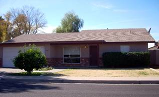
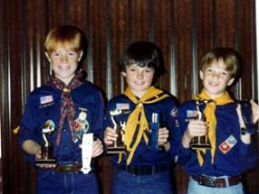

32 – Second move to Arizona at 1062 S Doran – June 1979 to March 1980

Ken came down first and started working with Larry and then with other contractors doing the finish work. He found us a nice new home to rent in a good area off Southern and Gilbert. It was a three-bedroom home and no basement. (Not many homes in Arizona have basements. Not sure why not.) We put Shellie and Jeff in one room, the three older boys in another and we had the third bedroom. Soon after, Jeff wanted to be with his brothers and Shellie wanted her own room, so we put him in with the other boys. We had bunk beds and a twin bed for the three boys so we put Jeff’s crib mattress under the bunk bed and at night, would pull it out and he would sleep on it on the floor. He thought that was great.
When we moved from Erda to Arizona the 2nd time, we had to leave Spunky and our cat here with the new farm manager. We were sad to leave them.
We really enjoy the ward here. It is the 40th ward. We walk to church all the time as it is a block and a half away. Three weeks after we got here, they asked me to teach the seven-year old’s in Jr. Sunday School. Soon afterwards, they asked Ken to be the Finance Chairman of the ward. A few weeks later, the lst of August, they called me in and asked if I would be the lst counselor to Mary Ann Merrill in the Primary. They were reorganizing the Primary Presidency and Mary Ann had asked for me to be her counselor. I really enjoyed working with Mary Ann. She is a beautiful young woman with a lot of confidence. She is a hard worker and very dedicated. She is also very talented. She has a wonderful husband and two cute little children, a boy and a girl. We became good friends right from the start. I can’t remember the other counselor that much, but I really remember Mary Ann. In fact, we wrote back and forth for some time after we moved away. I think it was my fault that we still don’t keep in touch. Anyway, I was just learning my job and getting to know the sisters and children, when the first part of November, the Bishopric called me in and said they were making some changes - that they were changing Mary Ann to be the Laurel leader in YWMIA and they wanted me to be the new president. I was very surprised to say the least. I had just found out shortly before this calling, that I was pregnant again. We hadn’t planned this pregnancy, in fact I was using birth control as we felt six children was a good-sized family and I was getting close to 40 years old. (I was 39). When I called to tell Sandi, she said: “Mom, I’m supposed to be having the babies now, not you.” I told her we hadn’t planned to have another baby, in fact, I had the doctor insert a “coil” after Jeff was born, but somehow, I had gotten pregnant anyway. I wasn’t happy when I found out, at least at first. I wasn’t feeling good. I didn’t have morning sickness so much, but I was sick in the afternoons and evenings. I didn’t have any energy and didn’t feel like taking on this responsibility. I told the Bishop that I was pregnant, but he didn’t seem to think that was a concern. He practically said “so!” I prayed about it and accepted. I have enjoyed this position and my counselors, secretaries and in-service leaders are terrific women. I think I mentioned earlier in my history that when we moved into the 40th ward, I was both surprised and excited to find that one of my Laurel girls from when we lived in Arizona the first time, had married, had a baby and was living in this ward. I learned that she had matured from those Laurel days and was a neat young woman. I asked for her to be one of my counselors. Her name was Sharla, and she did a great job and I grew to love her even more. I never had to worry whether these sisters were doing their jobs; they always went the extra mile in everything they did. Our teachers are also wonderful and most of them are doing a splendid job. That sure made my job a lot easier. My main challenge was keeping us staffed as so many moved out all the time or were called to other positions. They were just making the change to the block program just as we were moving back to Utah, so we were in a lot of meetings to begin implementing it, but the new president had the bulk of the changes to make.
This move to Arizona seemed more like a vacation to me because we went swimming just about every day. We bought a $10 swimming pass to the Jr High School and this entitled us to swimming lessons for the children as well. So, we took advantage of it. Ken started work at 6:00 a.m. in the mornings in the summer because it was so hot - and would get home soon after 2:00. We would all change into our swimming suits and take off to the pool.
I also enjoyed this time as I took more time to read the scriptures. I had been to a lecture by Bro. Covey who told us that we should pray before studying the scriptures and this would help us to understand the scriptures better and to gain more from them. I did this and I enjoyed reading and pondering the scriptures so much. I would cry many times as I read about the Savior and felt the spirit.
 I felt the children adjusted very well. They all had good friends and good teachers at school. Shellie loved Jr. High and Mutual. Her Mutual teacher was Sister Jacks and always did such special things for the girls and gave wonderful lessons. In fact, Sister Jacks gave a beautiful lesson one evening and Shellie really felt the spirit strong and this really helped her testimony of the gospel grow. Shellie was lst counselor in her Beehive class. Mike & David got involved in sports. They were in Primary Softball soon after we moved here. This is the first place where they had Primary teams, instead of city teams. They played their games at 6:00 in the mornings, so needless to say we were early risers. They also played on the soccer team after school began. They loved to ride their bikes and go fishing at Finch Park. Since it was so close they were able to ride their bikes there. They loved to go swimming, play darts, sleep at friend’s homes, go camping, etc. They had a paper route together which was once a week. Gangs were just coming about while we were there and there was a gang called the “8th Street Lobos”. 8th street wasn’t far from where we lived and so there were a couple of incidents involving them. One time a gang member chased Mike & David while they were doing their paper route. I don’t recall the other incident, but Mike, David & Shellie could tell us as it was vivid in their minds. Mike & David won trophies at the cup scout pine wood derby.
Scott had a little girl his age that lived across the street. They played together most of the time, which kept him happy. Jeff was really a little go-getter. He was always into things or else he wanted to be held but he was so cute that I enjoyed holding him. I became pregnant the last of August. After I adjusted to the idea of having another baby, I became more excited. I was worried, however, because we were experiencing financial problems again. Building had gone into a recession again. It seems Larry always talks us into coming into it when it was at a “High”, but soon after we get started, it falls again and we don’t have the money to keep us going. I was worried how we would support another child. We had been praying and soon our prayers were answered as Vern Pankratz called to ask Ken if he would be interested in coming up and running the Grantsville State Farm because they were discharging the man and his son who had been running it. We were excited to move back to be around Sandi and her family and our parents, brothers & sisters again, and especially since this hadn’t worked out in the construction business